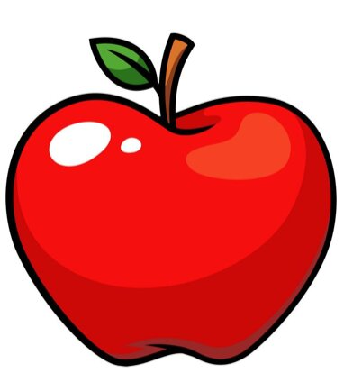

Fruit Facts

Apple is a round or oval-shaped fruit produced by the apple tree
(scientifically known as Malus
domestica). It is one of the most widely consumed fruits in the world. Apples come in a variety
of
colors, including red, green, and
yellow, and they can vary in
taste from sweet
to tart, depending
on the
variety.

An orange is a round or oval fruit typically known for its bright
orange
color, and it is produced
by the
orange tree (Citrus × sinensis).
Oranges
are one of the most
popular and
widely consumed fruits
globally